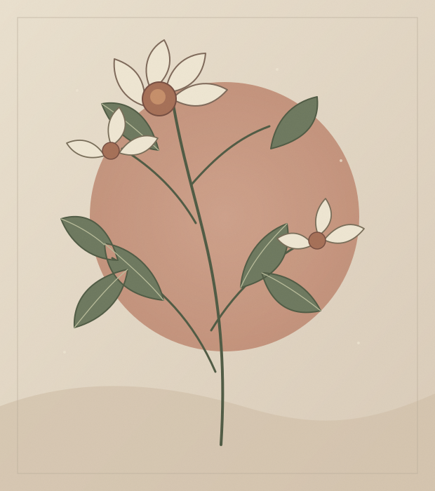

A SMALL CORNER OF THE INTERNET
留一页给
好奇与日常。
你好，我是 weizengyong。这里像一间小小书房，收着一些文字、想法，还有慢慢做出来的作品。

01 关于 / ABOUT
在做事的时候，
也在寻找自己的节奏。
我喜欢把零散的想法整理成可以分享的东西：有时是一段文字，有时是一个项目。这个网站，就是给它们留的一处位置。
我的公开仓库记录了 Python、界面开发与 Web 相关的尝试。以后，也会把更多过程与心得写在这里。
看看我的 GitHub02 文字 / JOURNAL
WORDS TO KEEP
最近写下的。
{% for post in site.posts limit: 2 %}
{% else %}
{% endfor %}
{{ post.title | escape }}
{{ post.description | default: post.excerpt | strip_html | truncate: 90 | escape }}
这里还留着一点空白。
第一篇文章写好后，会从这里开始。
03 作品 / SELECTED WORK
一些做过的事。
从公开仓库里挑出几个入口，留给想进一步了解的人。
04 联系 / SAY HELLO
LET'S KEEP IN TOUCH
若有所感，
不妨聊聊。
关于文字、项目，或只是一个刚冒出来的念头，都欢迎从 GitHub 找到我。
前往 GitHub